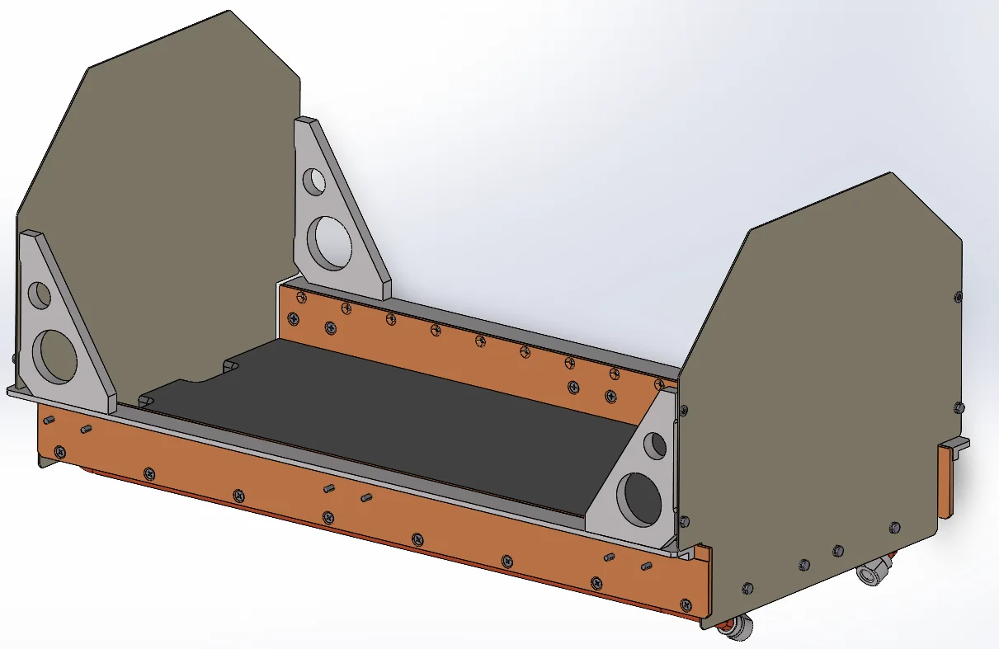
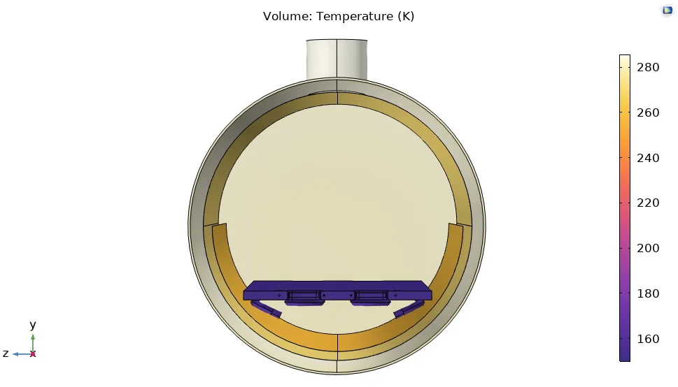
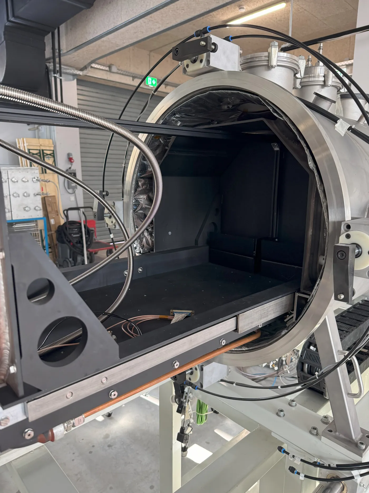

A cold plate and thermal shroud for a dirty thermal-vacuum chamber
Experiments with planetary regolith and thermal cycling need precise thermal control in vacuum. This work designed a cold plate and thermal shroud for a dusty thermal-vacuum chamber at TUM, keeping as much space for experiments as possible while minimising complexity and contamination risk.
The cold plate was evaluated for cooling a regolith bed, first with LN₂ and then with closed-loop circulation of HFE-7100, a non-conductive coolant chosen for operational flexibility and cost. Thermohydraulic analysis of embedded-tube and vacuum-brazed configurations favoured a dual-leg brazed plate for its much lower pressure drop, although cost kept the legacy plate in service for the current phase.
The modular shroud uses high-reflectivity 1000-series aluminium panels on PTFE spacers. After simulating several configurations, a modified multi-layer design was chosen to maximise radiative shielding while preserving experiment space. Integration covered mechanical constraints, fluid routing and thermal decoupling.
Together the two components give a reusable thermal control system for a contaminated vacuum environment, supporting lunar-surface simulations and the Rover Permittivity Sensor campaign.


